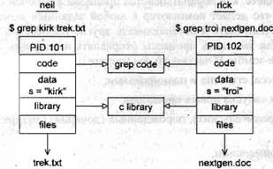
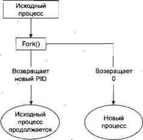

|
||||||||||||||||||||||||||||||||||||||||||||||||||||||||||||||||||||||||||||||||||||||||||||||||||||||||||||||||||||||||||||||||||||||||||||||||||||||||||||||||||||||||||||||||||||||||||||||||||||||||||||||||
|
|
Глава 11Процессы и сигналы Процессы и сигналы формируют главную часть операционной среды Linux. Они управляют почти всеми видами деятельности ОС Linux и UNIX-подобных компьютерных систем. Понимание того, как Linux и UNIX управляют процессами, сослужит добрую службу системным и прикладным программистам или системным администраторам. В этой главе вы узнаете, как обрабатываются процессы в рабочей среде Linux и как точно установить, что делает компьютер в любой заданный момент времени. Вы также увидите, как запускать и останавливать другие процессы в ваших собственных программах, как заставить процессы отправлять и получать сообщения и как избежать процессов-зомби. В частности, вы узнаете о: □ структуре процесса, его типе и планировании; □ разных способах запуска новых процессов; □ порождающих (родительских), порожденных (дочерних) процессах и процессах-зомби; □ сигналах и их применении. Что такое процесс?Стандарты UNIX, а именно IEEE Std 1003.1, 2004 Edition, определяют процесс как "адресное пространство с одним или несколькими потоками, выполняющимися в нем, и системные ресурсы, необходимые этим потокам. Мы будем рассматривать потоки в главе 12, а пока будем считать процессом просто любую выполняющуюся программу. Многозадачные системы, такие как Linux, позволяют многим программам выполняться одновременно. Каждый экземпляр выполняющейся программы создает процесс. Это особенно заметно в оконной системе, например Window System (часто называемой просто X). Как и ОС Windows, X предоставляет графический пользовательский интерфейс, позволяющий многим приложениям выполняться одновременно. Каждое приложение может отображаться в одном или нескольких окнах. Будучи многопользовательской системой, Linux разрешает многим пользователям одновременно обращаться к системе. Каждый пользователь в одно и то же время может запускать много программ или даже несколько экземпляров одной и той же программы. Сама система выполняет в это время другие программы, управляющие системными ресурсами и контролирующие доступ пользователей. Как вы видели в главе 4, выполняющаяся программа или процесс состоит из программного кода, данных, переменных (занимающих системную память), открытых файлов (файловых дескрипторов) и окружения. Обычно в системе Linux процессы совместно используют код и системные библиотеки, так что в любой момент времени в памяти находится только одна копия программного кода. Структура процессаДавайте посмотрим, как организовано сосуществование двух процессов в операционной системе. Если два пользователя neil и rick запускают в одно и то же время программу grep для поиска разных строк в различных файлах, применяемые для этого процессы могут выглядеть так, как показано на рис. 11.1. Рис. 11.1 Если вы сможете выполнить команду ps, как в приведенном далее коде, достаточно быстро и до того, как завершатся поиски строк, вывод будет выглядеть подобно следующим строкам: $ ps -ef UID PID PPID С STIME TTY TIME CMD rick 101 96 0 18:24 tty2 00:00:00 grep troi nextgen.doc neil 102 92 0 18:24 tty4 00:00:00 grep kirk trek.txt Каждому процессу выделяется уникальный номер, именуемый идентификатором процесса или PID. Обычно это положительное целое в диапазоне от 2 до 32 768. Когда процесс стартует, в последовательности выбирается следующее неиспользованное число. Когда все номера будут исчерпаны, выбор опять начнется с 2. Номер 1 обычно зарезервирован для специального процесса init, который управляет другими процессами. Мы скоро вернемся к процессу init. А пока вы видите, что двум процессам, запущенным пользователями neil и rick, выделены идентификаторы 101 и 102. Код программы, которая будет выполняться командой grep, хранится в файле на диске. Обычно процесс Linux не может писать в область памяти, применяемую для хранения кода программы, поэтому программный код загружается в память как доступный только для чтения. На рис. 11.1 видно, что несмотря на то, что в данную область нельзя писать, она может безопасно использоваться совместно. Системные библиотеки также можно совместно использовать. Следовательно, в памяти нужна, например, только одна копия функции printf, даже если многие выполняющиеся программы вызывают ее. Эта схема более сложная, но аналогичная той, которую используют для работы динамически подключаемые библиотеки в ОС Windows. Как видно из приведенной схемы, дополнительное преимущество заключается в том, что дисковый файл, содержащий исполняемую программу grep, меньше, т.к. не включает программный код совместно используемой библиотеки. Возможно, для одной программы это не слишком ощутимый выигрыш, но извлечение часто используемых подпрограмм, к примеру, из стандартной библиотеки С экономит значительный объем для операционной системы в целом. Конечно не все, что нужно программе, может быть совместно использовано. Например, переменные отдельно используются каждым процессом. В данном примере искомая строка, передаваемая команде grep, — это переменная s, принадлежащая пространству данных каждого процесса. Эти пространства разделены и, как правило, не могут читаться другим процессом. Файлы, которые применяются в двух командах grep, тоже разные; у каждого процесса есть свой набор файловых дескрипторов, используемых для доступа к файлам. Кроме того, у каждого процесса есть собственный стек, применяемый для локальных переменных в функциях и для управления вызовами функций и возвратом из них. У процесса также собственное окружение, содержащее переменные окружения, которые могут задаваться только для применения в данном процессе, например, с помощью функций putenvи getenv, как было показано в главе 4. Процесс должен поддерживать собственный счетчик программы, запись того места, до которого он добрался за время выполнения, или поток исполнения. В следующей главе вы увидите, что процессы могут иметь несколько потоков исполнения. Во многих системах Linux и некоторых системах UNIX существует специальный набор "файлов" в каталоге /proc. Это скорее специальные, чем истинные файлы, т.к. позволяют "заглянуть внутрь" процессов во время их выполнения, как если бы они были файлами в каталогах, В главе 3 мы приводили краткий обзор файловой системы /proc. И наконец, поскольку Linux, как и UNIX, обладает системой виртуальной памяти, которая удаляет страницы кода и данных на жесткий диск, можно управлять гораздо большим количеством процессов, чем позволяет объем физической памяти. Таблица процессовТаблица процессов Linux подобна структуре данных, описывающей все процессы, загруженные в текущий момент, например, их PID, состояние и строку команды, разновидность информационного вывода команды ps. Операционная система управляет процессами с помощью их идентификаторов, PID, которые применяются как указатели в таблице процессов. У таблицы ограниченный размер, поэтому число процессов, поддерживаемых системой, ограничено. В первых системах UNIX оно равнялось 256 процессам. Более современные реализации значительно ослабили это ограничение и ограничены только объемом памяти, доступным для формирования элемента таблицы процессов. Просмотр процессовКоманда psпоказывает выполняемые вами процессы, процессы, выполняемые другим пользователем, или все процессы в системе. Далее приведен еще один пример вывода: $ ps -ef UID PID PPID С STIME TTY TIME CMD root 433 425 0 18:12 tty1 00:00:00 [bash] rick 445 426 0 18:12 tty2 00:00:00 -bash rick 456 427 0 18:12 tty3 00:00:00 [bash] root 467 433 0 18:12 tty1 00:00:00 sh /usr/X11R6/bin/startx root 474 467 0 18:12 tty1 00:00:00 xinit /etc/X11/xinit/xinitrc -- root 478 474 0 18:12 tty1 00:00:00 /usr/bin/gnome-session root 487 1 0 18:12 tty1 00:00:00 gnome-smproxy --sm-client-id def root 493 1 0 18:12 tty1 00:00:01 [enlightenment] root 506 1 0 18:12 tty1 00:00:03 panel --sm-client-id defaults root 508 1 0 18:12 tty1 00:00:00 xscreensaver -no-splash -timeout root 510 1 0 18:12 tty1 00:00:01 gmc --sm-client-id default10 root 512 1 0 18:12 tty1 00:00:01 gnome-help-browser --sm-client-i root 649 445 0 18:24 tty2 00:00:00 su root 653 649 0 18:24 tty2 00:00:00 bash neil 655 428 0 18:24 tty4 00:00:00 -bash root 713 1 2 18:27 tty1 00:00:00 gnome-terminal root 715 713 0 18:28 tty1 00:00:00 gnome-pty-helper root 717 716 13 18:28 pts/0 00:00:01 emacs root 718 653 0 18:28 tty2 00:00:00 ps -ef Вывод отображает информацию о многих процессах, включая процессы, запущенные редактором Emacs в графической среде X ОС Linux. Например, столбец TTYпоказывает, с какого терминала стартовал процесс, столбец TIMEпоказывает время ЦПУ, затраченное к данному моменту, а столбец CMD— команду, примененную для запуска процесса. Давайте познакомимся поближе с некоторыми из этих процессов. neil 655 428 0 18:24 tty4 00:00:00 -bash Начальная регистрация была произведена на консоли номер 4. Это просто консоль на данном компьютере. Выполняемая программа командной оболочки — это стандартная оболочка Linux, bash. root 467 433 0 18:12 tty1 00:00:00 sh /usr/X11R6/bin/startx X Window System была запущена командой startx. Это сценарий командной оболочки, который запускает сервер X и выполняет некоторые начальные программы системы X. root 717 716 13 18:28 pts/0 00:00:01 emacs Этот процесс представляет окно в системе X, выполняющее программу Emacs. Он был запущен оконным диспетчером в ответ на запрос нового окна. Командной оболочке был назначен новый псевдотерминал pts/0 для считывания и записи. root 512 1 0 18:12 tty1 00:00:01 gnome-help-browser --sm-client-i Это обозреватель системы помощи среды GNOME, запущенный оконным диспетчером. По умолчанию программа psвыводит только процессы, поддерживающие подключение к терминалу, консоли, последовательной линии связи или псевдотерминалу. Другие процессы выполняются без взаимодействия с пользователем на терминале. Обычно это системные процессы, которые система Linux применяет для управления совместно используемыми ресурсами. Команду psможно применять для отображения всех таких процессов, использовав опцию -еи запросив "полную" информацию с помощью опции -f. Примечание Системные процессыДалее приведено несколько процессов, выполнявшихся в другой системе Linux. Вывод был сокращен для облегчения понимания. В следующих примерах вы увидите, как определить состояние или статус процесса. Вывод командой psстолбца STATпредоставляет коды текущего состояния процесса. Самые широко распространенные коды перечислены в табл. 11.1. Смысл некоторых из них станет понятен чуть позже в этой главе. Другие же не рассматриваются в данной книге и их можно спокойно игнорировать. Таблица 11.1
$ ps ах PID TTY STAT TIME COMMAND 1 ? Ss 0:03 init [5] 2 ? S 0:00 [migration/0] 3 ? SN 0:00 [ksoftirqd/0] 4 ? S< 0:05 [events/0] 5 ? S< 0:00 [khelper] 6 ? S< 0:00 [kthread] 840 ? S< 2:52 [kjournald] 888 ? S<s 0:03 /sbin/udevd --daemon 3069 ? Ss 0:00 /sbin/acpid 3098 ? Ss 0:11 /usr/sbin/hald --daemon=yes 3099 ? S 0:00 hald-runner 8357 ? Ss 0:03 /sbin/syslog-ng 8677 ? Ss 0:00 /opt/kde3/bin/kdm 9119 ? S 0:11 konsole [kdeinit] 9120 pts/2 Ss 0:00 /bin/bash 9151 ? Ss 0:00 /usr/sbin/cupsd 9457 ? Ss 0:00 /usr/sbin/cron 9479 ? Ss 0:00 /usr/sbin/sshd -o PidFile=/var/run/sshd.init.pid 9618 tty1 Ss+ 0:00 /sbin/mingetty --noclear tty1 9619 tty2 Ss+ 0:00 /sbin/mingetty tty2 9621 tty3 Ss+ 0:00 /sbin/mingetty tty3 9622 tty4 Ss+ 0:00 /sbin/mingetty tty4 9623 tty5 Ss+ 0:00 /sbin/mingetty tty5 9638 tty6 Ss+ 0:00 /sbin/mingetty tty6 10359 tty1 Ss+ 10:05 /usr/bin/Xorg -br -nolisten tcp :0 vt7 -auth 10360 ? S 0:00 -:0 10381 ? Ss 0:00 /bin/sh /usr/bin/kde 10438 ? Ss 0:00 /usr/bin/ssh-agent /bin/bash /etc/X11/xinit/xinitrc 10478 ? S 0:00 start_kdeinit --new-startup +kcminit_startup 10479 ? Ss 0:00 kdeinit Running... 10500 ? S 0:53 kdesktop [kdeinit] 10502 ? S 1:54 kicker [kdeinit] 10524 ? Sl 0:47 beagled /usr/lib/beagle/BeagleDaemon.exe --bg 10530 ? S 0:02 opensuseupdater 10539 ? S 0:02 kpowersave [kdeinit] 10541 ? S 0:03 klipper [kdeinit] 10555 ? S 0:01 kio_uiserver [kdeinit] 10688 ? S 0:53 konsole [kdeinit] 10689 pts/1 Ss+ 0:07 /bin/bash 10784 ? S 0:00 /opt/kde3/bin/kdesud 11052 ? S 0:01 [pdflush] 19996 ? SN1 0:20 beagled-helper /usr/lib/beagle/IndexHelper.exe 20254 ? S 0:00 qmgr -1 -t fifo -u 21192 ? Ss 0:00 /usr/sbin/ntpd -p /var/run/ntp/ntpd.pid -u ntp -i /v 21198 ? S 0:00 pickup -1 -t fifo -u 21475 pts/2 R+ 0:00 ps ax Здесь вы видите на самом деле очень важный процесс 1 ? Ss 0:03 init [5] В основном каждый процесс запускается другим процессом, называемым родительским или порождающим процессом. Подобным образом запущенный процесс называют дочерним или порожденным. Когда стартует ОС Linux, она выполняет единственную программу, первого предка и процесс с номером 1, init. Это, если хотите, диспетчер процессов операционной системы и прародитель всех процессов. Другие системные процессы, с которыми вы вскоре встретитесь, запускаются процессом initили другим процессом, запущенным процессом init. Один из таких примеров — процедура регистрации. Процесс initзапускает программу gettyдля каждого последовательного терминала или модема коммутируемой линии передачи, которые можно применять для регистрации. Эти процессы отображены в следующем выводе команды ps: 9619 tty2 Ss+ 0:00 /sbin/mingetty tty2 Процессы gettyждут работы на терминале, приглашая пользователя зарегистрироваться хорошо всем знакомой строкой, и затем передают управление программе регистрации, которая устанавливает окружение пользователя и в конце запускает сеанс командной оболочки. Когда пользовательский сеанс командной оболочки завершается, процесс initзапускает новый процесс getty. Как видите, способность запускать новые процессы и ждать их окончания — одна из основных характеристик системы. Позже в этой главе вы узнаете, как выполнять аналогичные задачи в ваших собственных программах с помощью системных вызовов fork, execи wait. Планирование процессовВ следующем примере вывода команды psприведен элемент списка для самой команды ps. 21475 pts/2 R+ 0:00 ps ax Эта строка означает, что процесс 21475находится в состоянии выполнения ( R) и выполняет он команду ps ах. Таким образом, процесс описан в своем собственном выводе! Индикатор состояния показывает только то, что программа готова к выполнению, а не то, что она обязательно выполняется в данный момент. На однопроцессорном компьютере в каждый момент времени может выполняться только один процесс, в то время как другие процессы ждут своего рабочего периода. Эти периоды, называемые квантами времени, очень короткие и создают впечатление одновременного выполнения программ. Опция R+просто показывает, что данная программа — фоновая задача, не ждущая завершения других процессов или окончания ввода или вывода данных. Именно поэтому можно увидеть два таких процесса, приведенные в списке вывода командыps. (Другой, часто встречающийся процесс, помечаемый как выполняющийся, — дисплейный сервер системы X.) Ядро Linux применяет планировщик процессов для того, чтобы решить, какой процесс получит следующий квант времени. Решение принимается исходя из приоритета процесса (мы обсуждали приоритеты процессов в главе 4). Процессы с высоким приоритетом выполняются чаще, а другие, такие как низкоприоритетные фоновые задачи, — реже. В ОС Linux процессы не могут превысить выделенный им квант времени. Они преимущественно относятся к разным задачам, поэтому приостанавливаются и возобновляются без взаимодействия друг с другом. В более старых системах, например Windows 3.х, как правило, для возобновления других процессов требовалось явное согласие процесса. В многозадачных системах, таких как Linux, несколько программ могут претендовать на один и тот же ресурс, поэтому программы с короткими рабочими циклами, прерывающиеся для ввода, считаются лучше ведущими себя, чем программы, прибирающие к рукам процессор для продолжительного вычисления какого-либо значения или непрерывных запросов к системе, касающихся готовности ввода данных. Хорошо ведущие себя программы называют nice-программами (привлекательными программами) и в известном смысле эту "привлекательность" можно измерить. Операционная система определяет приоритет процесса на основе значения "nice", по умолчанию равного 0, и поведения программы. Программы, выполняющиеся без пауз в течение долгих периодов, как правило, получают более низкие приоритеты. Программы, делающие паузы время от времени, например в ожидании ввода, получают награду. Это помогает сохранить отзывчивость программы, взаимодействующей с пользователем; пока она ждет какого-либо ввода от пользователя, система увеличивает ее приоритет, чтобы, когда программа будет готова возобновить выполнение, у нее был высокий приоритет. Задать значение niceдля процесса можно с помощью команды nice, а изменить его — с помощью команды renice. Команда niceувеличивает на 10 значение niceпроцесса, присваивая ему более низкий приоритет. Просмотреть значения niceактивных процессов можно с помощью опций -lили -f(для полного вывода) команды ps. Интересующие вас значения представлены в столбце NI(nice). $ ps -l F S UID PID PPID С PRI NI ADDR SZ WCHAN TTY TIME CMD 000 S 500 1259 1254 0 75 0 - 710 wait4 pts/2 00:00:00 bash 000 S 500 1262 1251 0 75 0 - 714 wait4 pts/1 00:00:00 bash 000 S 500 1313 1262 0 75 0 - 2762 schedu pts/1 00:00:00 emacs 000 S 500 1362 1262 2 80 0 - 789 schedu pts/1 00:00:00 oclook 000 R 500 1363 1262 0 81 0 - 782 - pts/1 00:00:00 ps Как видно из списка, программа oclockвыполняется (как процесс 1362) со значением niceпо умолчанию. Если бы она была запущена командой $ nice oclock & то получила бы значение nice+10. Если вы откорректируете это значение командой $ renice 10 1362 1362: old priority 0, new priority 10 программа oclockбудет выполняться реже. Увидеть измененное значение nice можно снова с помощью команды ps: $ ps -l F S UID PID PPID С PRI NI ADDR SZ WCHAN TTY TIME CMD 000 S 500 1259 1254 0 75 0 - 710 wait4 pts/2 00:00:00 bash 000 S 500 1262 1251 0 75 0 - 714 wait4 pts/1 00:00:00 bash 000 S 500 1313 1262 0 75 0 - 2762 schedu pts/1 00:00:00 emacs 000 S 500 1362 1262 0 90 10 - 789 schedu pts/1 00:00:00 oclock 000 R 500 1365 1262 0 81 0 - 782 - pts/1 00:00:00 ps Столбец состояния теперь также содержит N, указывая на то, что значение niceбыло изменено по сравнению с принятым по умолчанию: $ ps х PID TTY STAT TIME COMMAND 1362 pts/1 SN 0:00 oclock Поле PPIDв выводе команды psсодержит ID родительского процесса (PID), либо процесса, запустившего данный процесс, либо, если этот процесс уже не выполняется, процесса init(PID, равный 1). Планировщик процессов ОС Linux решает, какому процессу разрешить выполнение, на основе приоритета. Конкретные реализации конечно отличаются, но высокоприоритетные процессы выполняются чаще. В некоторых случаях низкоприоритетные процессы не выполняются совсем, если высокоприоритетные процессы готовы к выполнению. Запуск новых процессовПрименив библиотечную функцию system, вы можете заставить программу выполняться из другой программы и тем самым создать новый процесс: #include <stdlib.h> int system(const char *string); Функция systemвыполняет команду, переданную ей как строку, и ждет ее завершения. Команда выполняется, как если бы командной оболочке была передана следующая команда: $ sh -с string Функция systemвозвращает код 127, если командная оболочка не может быть запущена для выполнения команды, и -1 в случае другой ошибки. Иначе systemвернет код завершения команды. Выполните упражнение 11.1. Упражнение 11.1. Функцияsystem Вы можете использовать systemдля написания программы, выполняющей команду ps. Хотя нельзя сказать, что она необычайно полезна, вы увидите, как применять этот метод в последующих примерах. (Для простоты примера мы не проверяем, работает ли на самом деле системный вызов.) #include <stdlib.h> #include <stdio.h> int main() { printf("Running ps with system\n"); system("ps ax"); printf("Done \n"); exit(0); } Когда вы откомпилируете и выполните программу system1.с, то получите вывод, похожий на приведенный далее: $ ./system1 Running ps with system PID TTY STAT TIME COMMAND 1 ? Ss 0:03 init [5] ... 1262 pts/1 Ss 0:00 /bin/bash 1273 pts/2 S 0:00 su - 1274 pts/2 S+ 0:00 -bash 1463 pts/2 SN 0:00 oclock 1465 pts/1 S 0:01 emacs Makefile 1480 pts/1 S+ 0:00 ./system1 1481 pts/1 R+ 0:00 ps ax Done. Поскольку функция systemприменяет командную оболочку для запуска нужной программы, вы можете перевести ее в фоновый режим, заменив вызов функции в файле system1.с на следующий: system("ps ах &"); Когда вы откомпилируете и выполните эту версию программы, то получите следующий вывод: $ ./system2 Running ps with system PID TTY STAT TIME COMMAND 1 ? S 0:03 init [5] ... Done. $ 1274 pts/2 3+ 0:00 -bash 1463 pts/2 SN 0:00 oclock 1465 pts/1 S 0:01 emacs Makefile 1484 pts/1 R 0:00 ps ax Как это работает В первом примере программа вызывает функцию systemсо строкой " ps ах", выполняющую программу ps. Когда команда psзавершается, вызов systemвозвращает управление программе. Функция systemможет быть очень полезной, но она тоже ограничена. Поскольку программа вынуждена ждать, пока не завершится процесс, начатый вызовом system, вы не можете продолжить выполнение других задач. Во втором примере вызов функции systemвернет управление программе, как только завершится команда командной оболочки. Поскольку это запрос на выполнение программы в фоновом режиме, командная оболочка вернет управление в программу, как только будет запущена программа ps, ровно то же, что произошло бы при вводе в строку приглашения командной оболочки команды $ ps ах & Далее программа system2 выводит Done.и завершается до того, как у команды psпоявится возможность отобразить до конца весь свой вывод. Вывод psпродолжает формироваться после завершения system2 и в этом случае не включает в список элемент, описывающий процесс system2. Такое поведение процесса может сильно сбить с толку пользователей. Для того чтобы умело применять процессы, вы должны лучше управлять их действиями. Давайте рассмотрим низкоуровневый интерфейс для создания процесса, exec. Примечание Замена образа процессаСуществует целое семейство родственных функций, сгруппированных под заголовком exec. Они отличаются способом запуска процессов и представлением аргументов программы. Функция execзамещает текущий процесс новым, заданным в аргументе pathили file. Функции execможно применять для передачи выполнения вашей программы другой программе. Например, перед запуском другого приложения с политикой ограниченного применения вы можете проверить имя пользователя и пароль. Функции execболее эффективны по сравнению с system, т.к. исходная программа больше не будет выполняться после запуска новой программы. #include <unistd.h> char **environ; int execl(const char *path, const char *arg0, ..., (char *)0); int execlp(const char *file, const char *arg0, ..., (char *)0); int execle(const char *path, const char *arg0, ..., (char *)0, char *const envp[]); int execv(const char *path, char *const argv[]); int execvp(const char *file, char *const argv[]); int execve(const char *path, char *const argv[], char *const envp[]); Эти функции делятся на два вида. execl, execlpи execleпринимают переменное число аргументов, заканчивающихся указателем null. У execvи execvpвторой аргумент — массив строк. В обоих случаях новая программа стартует с заданными аргументами, представленными в массиве argv, передаваемом функции main. Эти функции реализованы, как правило, с использованием execve, хотя нет обязательных требований на этот счет. Функции, имена которых содержат суффикс p, отличаются тем, что ищут переменную окружения PATHдля определения исполняемого файла новой программы. Если эта переменная не позволяет найти нужный файл, необходимо передать функции как параметр абсолютное имя файла, включающее каталоги. Передать значение окружению программы может глобальная переменная environ. Другой вариант — дополнительный аргумент в функциях execleи execve, способный передавать строки, используемые как окружение новой программы. Если вы хотите применить функцию execдля запуска программы ps, можно выбирать любую функцию из семейства exec, как показано в вызовах приведенного далее фрагмента программного кода: #include <unistd.h> /* Пример списка аргументов */ /* Учтите, что для argv[0] необходимо имя программы */ char *const ps_argv[] = {"ps", "ax", 0}; /* He слишком полезный пример окружения */ char *const ps_envp[] = {"PATH=/bin:/usr/bin", "TERM=console", 0}; /* Возможные вызовы функций exec */ execl("/bin/ps", "ps", "ax", 0); /* предполагается, что ps в /bin */ execlp("ps", "ps", "ax", 0); /* предполагается, что /bin в PATH */ execle("/bin/ps", "ps", "ax", 0, ps_envp); /* передается свое окружение */ execv("/bin/ps", ps_argv); execvp("ps", ps_argv); execve("/bin/ps", ps_argv, ps_envp); А теперь выполните упражнение 11.2. Упражнение 11.2. Функцияexeclp Давайте изменим пример и используем вызов execlp: #include <unistd.h> #include <stdio.h> #include <stdlib.h> int main() { printf("Running ps with execlp\n"); execlp("ps", "ps", "ax", 0); printf("Done.\n"); exit(0); } Когда вы выполните эту программу, рехес.с, то получите обычный вывод команды ps, но без сообщения Done. Кроме того, обратите внимание на то, что в выводе нет процесса с именем рехес: $ ./рехес Running ps with execlp PID TTY STAT TIME COMMAND 1 ? S 0:03 init [5] ... 1262 pts/1 Ss 0:00 /bin/bash 1273 pts/2 S 0:00 su - 1274 pts/2 S+ 0:00 -bash 1463 pts/1 SN 0:00 oclock 1465 pts/1 S 0:01 emacs Makefile 1514 pts/1 R+ 0:00 ps ax Как это работает Программа выводит первое сообщение и затем вызывает функцию execlp, которая ищет каталоги, заданные в переменной окружения PATHдля обнаружения программы ps. Далее она выполняет команду вместо программы рехес, запустив ее так, как будто вы ввели команду командной оболочки $ ps ax Когда psзавершается, вы получаете новую строку приглашения командной оболочки. Возврата в программу рехесне происходит, поэтому второе сообщение не выводится. PID нового процесса тот же, что и у исходного, то же самое можно сказать о PID родительского процесса и значении nice. В сущности, происходит следующее: выполняющаяся программа запустила на выполнение новый код и новый исполняемый файл, заданный в вызове функции exec. Существует ограничение для общего размера списка аргументов и окружения процесса, запускаемого функциями exec. Оно задается в переменной ARG_MAXи в системах Linux равно 128 Кбайт. В других системах может задаваться меньший предельный размер, что способно порождать проблемы. Стандарт POSIX гласит, что ARG_MAXдолжна быть не менее 4096 байтов. Функции exec, как правило, не возвращаются в программу до тех пор, пока не возникла ошибка, в этом случае задается переменная errnoи функция execвозвращает -1. Новые процессы, запущенные exec, наследуют многие свойства исходного процесса. В частности, открытые файловые дескрипторы остаются открытыми в новом процессе, пока не установлен их флаг FD_CLOEXEC(close on exec) (подробную информацию см. в описании системного вызова fcntlв главе 3). Любые открытые в исходном процессе потоки каталогов закрываются. Дублирование образа процессаДля применения процессов, выполняющих несколько функций одновременно, можно либо использовать потоки, обсуждаемые в главе 12, либо создавать в программе полностью отдельный процесс, как делает init, вместо замещения текущего потока исполнения, как в случае применения функции exec. Создать новый процесс можно с помощью вызова fork. Системный вызов дублирует текущий процесс, создавая новый элемент в таблице процессов с множеством атрибутов, таких же как у текущего процесса. Новый процесс почти идентичен исходному, выполняет тот же программный код, но в своем пространстве данных, окружении и со своими файловыми дескрипторами. В комбинации с функциями execвызов fork— все, что вам нужно для создания новых процессов. #include <sys/types.h> #include <unistd.h> pid_t fork(void); Как видно из рис. 11.2, вызов forkвозвращает в родительский процесс PID нового дочернего процесса. Новый процесс продолжает выполнение так же, как и исходный, за исключением того, что в дочерний процесс вызов forkвозвращает 0. Это позволяет родительскому и дочернему процессам определить, "кто есть кто".  Рис. 11.2 Если вызов forkзавершается аварийно, он возвращает -1. Обычно это происходит из-за ограничения числа дочерних процессов, которые может иметь родительский процесс ( CHILD_MAX), в этом случае переменной errnoбудет присвоено значение EAGAIN. Если для элемента таблицы процессов недостаточно места или не хватает виртуальной памяти, переменная errnoполучит значение ENOMEM. Далее приведен фрагмент типичного программного кода, использующего вызов fork: pid_t new_pid; new_pid = fork(); switch(new_pid) { case -1: /* Ошибка */ break; case 0: /* Мы — дочерний процесс */ break; default: /* Мы — родительский процесс */ break; } Выполните упражнение 11.3. Упражнение 11.3. Системный вызовfork Давайте рассмотрим простой пример fork1.с: #include <sys/types.h> #include <unistd.h> #include <stdio.h> #include <stdlib.h> int main() { pid_t pid; char* message; int n; printf("fork program starting\n"); pid = fork(); switch(pid) { case -1: perror("fork failed"); exit(1); case 0: message = "This is the child"; n = 5; break; default: message = "This is the parent"; n = 3; break; } for (; n > 0; n--) { puts(message); sleep(1); } exit(0); } Эта программа выполняет два процесса. Дочерний процесс создается и выводит пять раз сообщение. Исходный процесс (родитель) выводит сообщение только три раза. Родительский процесс завершается до того, как дочерний процесс выведет все свои сообщения, поэтому в вывод попадает очередное приглашение командной оболочки. $ ./fork1 fork program starting This is the child This is the parent This is the parent This is the child This is the parent This is the child $ This is the child This is the child Как это работает Когда вызывается fork, эта программа делится на два отдельных процесса. Родительский процесс идентифицируется ненулевым возвращаемым из forkзначением и используется для задания количества сообщений, выводимых с интервалом в одну секунду. Ожидание процессаКогда вы запускаете дочерний процесс с помощью вызова fork, он начинает жить собственной жизнью и выполняется независимо. Иногда вам нужно знать, когда закончился дочерний процесс. Например, в предыдущей программе родительский процесс завершается раньше дочернего, и вы получаете слегка беспорядочный вывод, потому что дочерний процесс продолжает выполняться. Вы можете с помощью системного вызова waitзаставить родительский процесс дождаться завершения дочернего процесса перед своим продолжением. #include <sys/types.h> #include <sys/wait.h> pid_t wait(int *stat_loc); Системный вызов waitзаставляет родительский процесс сделать паузу до тех пор, пока один из его дочерних процессов не остановится. Вызов возвращает PID дочернего процесса. Обычно это дочерний процесс, который завершился. Сведения о состоянии позволяют родительскому процессу определить статус завершения дочернего процесса, т.е. значение, возвращенное из функции mainили переданное функции exit. Если stat_locне равен пустому указателю, информация о состоянии будет записана в то место, на которое указывает этот параметр. Интерпретировать информацию о состоянии процесса можно с помощью макросов, описанных в файле sys/wait.h и приведенных в табл. 11.2. Таблица 11.2
Выполните упражнение 11.4. Упражнение 11.4. Системный вызовwait В этом упражнении вы слегка измените программу, чтобы можно было подождать и проверить код состояния дочернего процесса. Назовите новую программу wait.c. #include <sys/types.h> #include <sys/wait.h> #include <unistd.h> #include <stdio.h> #include <stdlib.h> int main() { pid_t pid; char* message; int n; int exit_code; printf("fork program starting\n"); pid = fork(); switch(pid) { case -1: perror("fork failed"); exit(1); case 0: message = "This is the child"; n = 5; exit_code = 37; break; default: message = "This is the parent"; n = 3; exit_code = 0; break; } for (; n > 0; n--) { puts(message); sleep(1); } Следующий фрагмент программы ждет окончания дочернего процесса: if (pid != 0) { int stat_val; pid_t child_pid; child_pid = wait(&stat_val); printf("Child has finished: PID = %d\n", child_pid); if (WIFEXITED(stat_val)) printf("Child exited with code %d\n", WEXITSTATUS(stat_val)); else printf("Child terminated abnormally\n"); } exit(exit_code); } Когда вы выполните эту программу, то увидите, что родительский процесс ждет дочерний: $ ./wait fork program starting This is the child This is the parent This is the parent This is the child This is the parent This is the child This is the child This is the child Child has finished: PID = 1582 Child exited with code 37 $ Как это работает Родительский процесс, получивший ненулевое значение, возвращенное из вызова fork, применяет системный вызов waitдля приостановки своего выполнения до тех пор, пока информация о состоянии дочернего процесса не станет доступной. Это произойдет, когда дочерний процесс вызовет функцию exit; мы присвоили ему код завершения 37. Далее родительский процесс продолжается, определяет, протестировав значение, возвращенное вызовом wait, что дочерний процесс завершился нормально, и извлекает код завершения из информации о состоянии процесса. Процессы-зомбиПрименение вызова forkдля создания процессов может оказаться очень полезным, но вы должны отслеживать дочерние процессы. Когда дочерний процесс завершается, связь его с родителем сохраняется до тех пор, пока родительский процесс в свою очередь не завершится нормально, или не вызовет wait. Следовательно, запись о дочернем процессе не исчезает из таблицы процессов немедленно. Становясь неактивным, дочерний процесс все еще остается в системе, поскольку его код завершения должен быть сохранен, на случай если родительский процесс в дальнейшем вызовет wait. Он становится умершим или процессом-зомби. Вы сможете увидеть создание процесса-зомби, если измените количество сообщений в программе из примера с вызовом fork. Если дочерний процесс выводит меньше сообщений, чем родительский, он закончится первым и будет существовать как зомби, пока не завершится родительский процесс. Упражнение 11.5. Зомби Программа fork2.c такая же, как программа fork1.с, за исключением того, что количества сообщений, выводимых родительским и дочерним процессами, поменяли местами. Далее приведены соответствующие строки кода: switch (pid) { case -1: perror("fork failed"); exit(1); case 0: message = "This is the child"; n = 3; break; default: message = "This is the parent"; n = 5; break; } Как это работает Если вы выполните только что приведенную программу с помощью команды ./fork2 &и затем вызовите программу psпосле завершения дочернего процесса, но до окончания родительского, то увидите строку, подобную следующей. (Некоторые системы могут сказать <zombie>вместо <defunct>.) $ ps -аl F S UID PID PPID С PRI NI ADDR SZ WCHAN TTY TIME CMD 004 S 0 1273 1259 0 75 0 - 589 wait4 pts/2 00:00:00 su 000 S 0 1274 1273 0 75 0 - 731 schedu pts/2 00:00:00 bash 000 S 500 1463 1262 0 75 0 - 788 schedu pts/1 00:00:00 oclock 000 S 500 1465 1262 0 75 0 - 2569 schedu pts/1 00:00:01 emacs 000 S 500 1603 1262 0 75 0 - 313 schedu pts/1 00:00:00 fork2 003 Z 500 1604 1603 0 75 0 - 0 do_exi pts/1 00:00:00 fork2 <defunct> 000 R 500 1605 1262 0 81 0 - 781 - pts/1 00:00:00 ps Если родительский процесс завершится необычно, дочерний процесс автоматически получит в качестве родителя процесс с PID, равным 1 (init). Теперь дочерний процесс — зомби, который уже не выполняется, но унаследован процессом initиз-за необычного окончания родительского процесса. Зомби останется в таблице процессов, пока не пойман процессом init. Чем больше таблица, тем медленнее эта процедура. Следует избегать процессов-зомби, поскольку они потребляют ресурсы до тех пор, пока процесс init не вычистит их. Есть еще один системный вызов, который можно применять для ожидания дочернего процесса. Он называется waitpidи применяется для ожидания завершения определенного процесса. #include <sys/types.h> #include <sys/wait.h> pid_t waitpid(pid_t pid, int *stat_loc, int options); Аргумент pid— конкретный дочерний процесс, окончания которого нужно ждать. Если он равен –1, waitpidвернет информацию о любом дочернем процессе. Как и вызов wait, он записывает информацию о состоянии процесса в место, указанное аргументом stat_loc, если последний не равен пустому указателю. Аргумент optionsпозволяет изменить поведение waitpid. Наиболее полезная опция WNOHANGмешает вызову waitpidприостанавливать выполнение вызвавшего его процесса. Ее можно применять для выяснения, завершился ли какой-либо из дочерних процессов, и если нет, то продолжать выполнение. Остальные опции такие же, как в вызове wait. Итак, если вы хотите, чтобы родительский процесс периодически проверял, завершился ли конкретный дочерний процесс, можно использовать следующий вызов: waitpid(child_pid, (int *)0, WNOHANG); Он вернет ноль, если дочерний процесс не завершился и не остановлен, или child_pid, если это произошло. Вызов waitpid вернет -1 в случае ошибки и установит переменную errno. Это может произойти, если нет дочерних процессов ( errnoравна ECHILD), если вызов прерван сигналом ( EINTR) или аргумент optionsневерный ( EINVAL). Перенаправление ввода и выводаВы можете применить ваши знания о процессах для изменения поведения программ, используя тот факт, что открытые файловые дескрипторы сохраняются вызовами forkи exec. Следующий пример из упражнения 11.6 содержит программу-фильтр, которая читает из стандартного ввода и пишет в свой стандартный вывод, выполняя при этом некоторое полезное преобразование. Далее приведена программа очень простой фильтрации upper.c, которая читает ввод и преобразует строчные буквы в прописные: #include <stdio.h> #include <ctype.h> #include <stdlib.h> int main() { int ch; while ((ch = getchar()) != EOF) { putchar(toupper(ch)); } exit(0); } Когда вы выполните программу, она сделает то, что и ожидалось: $ ./upper hello THERE HELLO THERE ^D $ Вы, конечно, можете применить ее для преобразования символов файла, используя перенаправление, применяемое командной оболочкой: $ cat file.txt this is the file, file.txt, it is all lower case. $ ./upper < file.txt THIS IS THE FILE, FILE.TXT, IT IS ALL LOWER CASE. Что если вы хотите применить этот фильтр из другой программы? Программа useupper.c принимает имя файла как аргумент и откликается сообщением об ошибке при некорректном вызове: #include <unistd.h> #include <stdio.h> #include <stdlib.h> int main(int argc, char *argv[]) { char *filename; if (argc != 2) { fprintf (stderr, "usage: useupper file\n"); exit(1); } filename = argv[1]; Вы повторно открываете стандартный ввод, снова при этом проверяете наличие любых ошибок, а затем применяете функцию execlдля вызова программы upper: if (!freopen(filename, "r", stdin)) { fprintf(stderr, "could not redirect stdin from file %s\n", filename); exit(2); } execl("./upper", "upper", 0); He забудьте, что execlзаменяет текущий процесс, если ошибок нет, оставшиеся строки не выполняются. perror("could not exec ./upper"); exit(3); } Как это работает Когда вы выполняете эту программу, ей можно передать файл для преобразования в прописные буквы. Работа делается программой upper, которая не обрабатывает аргументы с именами файлов. Обратите внимание на то, что вам не нужен исходный код программы upper; таким способом можно запустить любую исполняемую программу. $ ./useupper file.txt THIS IS THE FILE, FILE.TXT, IT IS ALL LOWER CASE. Программа useupper применяет freopenдля закрытия стандартного ввода и связывания потока файла с файлом, заданным как аргумент программы. Затем она вызывает execl, чтобы заменить код выполняемого процесса кодом программы upper. Поскольку файловые дескрипторы сохраняются, пройдя сквозь вызов execl, программа upper выполняется так же, как при вводе ее в строке командной оболочки $ ./upper < file.txt ПотокиПроцессы Linux могут взаимодействовать, отправлять друг другу сообщения и прерываться друг другом. Они могут даже организоваться и совместно использовать сегменты памяти, но они остаются обособленными объектами операционной системы. Процессы не настроены на совместное использование переменных. Существует класс процесса, именуемый потоком (thread), который доступен во многих системах UNIX и Linux. Несмотря на то, что потоки трудно, программировать, они могут быть очень важны для некоторых приложений, таких как многопоточные серверы баз данных. Программирование потоков в Linux (и вообще в UNIX) не так распространено, как применение множественных процессов, поскольку процессы Linux очень легко применять и программирование множественных взаимодействующих процессов гораздо легче программирования потоков. Потоки обсуждаются в главе 12. СигналыСигнал — это событие, генерируемое системами UNIX и Linux в ответ на некоторую ситуацию, получив сообщение о котором процесс, в свою очередь, может предпринять какое-то действие. Мы применяем термин "возбуждать" (raise) для обозначения генерации сигнала и термин "захватывать" (catch) для обозначения получения или приема сигнала. Сигналы возбуждаются некоторыми ошибочными ситуациями, например нарушениями сегментации памяти, ошибками процессора при выполнении операций с плавающей точкой или некорректными командами. Они генерируются командной оболочкой и обработчиками терминалов для вызова прерываний и могут явно пересылаться от одного процесса к другому как способ передачи информации или коррекции поведения. Во всех этих случаях программный интерфейс один и тот же. Сигналы могут возбуждаться, улавливаться и соответственно обрабатываться или (по крайней мере, некоторые) игнорироваться. Имена сигналов задаются с помощью включенного заголовочного файла signal.h. Они начинаются с префикса SIGи включают приведенные в табл. 11.3 сигналы. Таблица 11.3
*Могут быть также предприняты действия, зависящие от конкретной реализации. Если процесс получает один из этих сигналов без предварительной подготовки к его перехвату, процесс будет немедленно завершен. Обычно при этом создается файл с дампом ядра. Этот файл в текущем каталоге, названный core, представляет собой образ процесса, который может оказаться полезным при отладке. К дополнительным относятся сигналы, приведенные в табл. 11.4. Таблица 11.4
Сигнал SIGCHLDможет быть полезен для управления дочерними процессами. По умолчанию он игнорируется. Остальные сигналы заставляют процессы, получившие их, остановиться, за исключением сигнала SIGCONT, который вызывает возобновление процесса. Они применяются программами командной оболочки для контроля работы и редко используются в пользовательских программах. Чуть позже мы рассмотрим более подробно первую группу сигналов. Пока же достаточно знать, что если командная оболочка и драйвер терминала нормально настроены, ввод символа прерывания (обычно от нажатия комбинации клавиш <Ctrl>+<C>) с клавиатуры приведет к отправке сигнала SIGINTприоритетному процессу, т.е. программе, выполняющейся в данный момент. Это вызовет завершение программы, если в ней не предусмотрен перехват сигнала, Если вы хотите отправить сигнал не текущей приоритетной задаче, а другому процессу, используйте команду kill. Она принимает для отправки процессу в качестве необязательного параметра имя сигнала или его номер и PID (который, как правило, можно определить с помощью команды ps). Например, для отправки сигнала "останов или разъединение" командной оболочке, выполняющейся на другом терминале с PID 512, вы должны применить следующую команду: $ kill -HUP 512 Удобный вариант команды kill— команда killall, которая позволяет отправить сигнал всем процессам, выполняющим конкретную команду. Не все системы UNIX поддерживают ее, но ОС Linux, как правило, поддерживает. Этот вариант полезен, когда вы не знаете PID процесса или хотите отправить сигнал нескольким разным процессам, выполняющим одну и ту же команду. Обычное применение — заставить программу inetdперечитать параметры настройки. Для этого можно воспользоваться следующей командой: $ killall -HUP inetd Программы могут обрабатывать сигналы с помощью библиотечной функции signal. #include <signal.h> void (*signal(int sig, void (*func)(int)))(int); Это довольно сложное объявление говорит о том, что signal— это функция, принимающая два параметра, sigи func. Сигнал, который нужно перехватить или игнорировать, задается аргументом sig. Функция, которую следует вызвать при получении заданного сигнала, содержится в аргументе func. Эта функция должна принимать единственный аргумент типа int(принятый сигнал) и иметь тип void. Функция сигнала возвращает функцию того же типа, которая является предыдущим значением функции, заданной для обработки сигнала, или одно из двух специальных значений: □ SIG_IGN— игнорировать сигнал; □ SIG_DFL— восстановить поведение по умолчанию. Пример сделает все понятным. В упражнении 11.7 вы напишете программу ctrlc.c, которая реагирует на нажатие комбинации клавиш <Ctrl>+<C> вместо обычного завершения выводом соответствующего сообщения. Повторное нажатие <Ctrl>+<C> завершает программу. Упражнение 11.7. Обработка сигналаФункция ouchреагирует на сигнал, передаваемый в параметре sig. Эта функция будет вызываться, когда возникнет сигнал. Она выводит сообщение и затем восстанавливает обработку сигнала по умолчанию для сигнала SIGINT (генерируется при нажатии комбинации клавиш <Ctrl>+<C>). #include <signal.h> #include <stdio.h> #include <unistd.h> void ouch(int sig) { printf("OUCH! - I got signal %d\n", sig); (void)signal(SIGINT, SIG_DFL); } Функция mainдолжна взаимодействовать с сигналом SIGINT, генерируемым при нажатии комбинации клавиш <Ctrl>+<C>. В остальное время она находится в бесконечном цикле, выводя один раз в секунду сообщение. int main() { (void)signal(SIGINT, ouch); while(1) { printf("Hello World!\n"); sleep(1); } } Ввод комбинации клавиш <Ctrl>+<C> (отображается как ^Cв следующем далее выводе) в первый раз заставляет программу отреагировать и продолжиться. Когда вы нажимаете <Ctrl>+<C> снова, программа завершается, т.к. сигнал SIGINTвернул программе стандартное поведение, заставляющее ее завершиться. $ ./ctrlcl Hello World! Hello World! Hello World! Hello World! ^C OUCH! - I got signal 2 Hello World! Hello World! Hello World! Hello World! ^C $ Как видно из данного примера, функция обработки сигнала принимает один целочисленный параметр — номер сигнала, приводящий к вызову функции. Это удобно, если одна и та же функция применяется для обработки нескольких сигналов. В данном случае вы выводите значение SIGINT, которое в этой системе оказывается равным 2. Не стоит полагаться на стандартные числовые значения сигналов, в новых программах всегда пользуйтесь именами сигналов. Примечание Как это работает Программа устроена так, что, когда вы задаете сигнал SIGINT, нажимая комбинацию клавиш <Ctrl>+<C>, вызывает функцию ouch. После того как функция прерывания ouchзавершится, программа продолжает выполняться, но восстанавливает реакцию на сигнал, принятую по умолчанию. (У разных версий UNIX, в особенности у потомков системы Berkeley UNIX, в течение многих лет сложилось разное поведение при получении сигналов. Если вы хотите восстановить поведение по умолчанию после возникновения сигнала, лучше всего запрограммировать его на конкретные действия.) Когда программа получает второй сигнал SIGINT, она выполняет стандартное действие, приводящее к завершению программы. Если вы хотите сохранить обработчик сигнала и продолжать реагировать на комбинацию клавиш <Ctrl>+<C>, вам придется восстановить его, вызвав функцию signalеще раз. Это приведет к возникновению короткого промежутка времени, начиная с запуска функции прерывания и до момента восстановления обработчика сигнала, в течение которого сигнал не будет обрабатываться. Если второй сигнал будет получен в этот период, вопреки вашим желаниям программа может завершиться. Примечание Функция signalвозвращает предыдущее значение обработчика для заданного типа сигнала, если таковой есть, или в противном случае SIG_ERRс установкой положительного значения в переменной errno. Если задан неверный сигнал или делается попытка обработать сигнал, который не может быть перехвачен или игнорироваться, например SIGKILL, переменной errnoприсваивается значение EINVAL. Отправка сигналовПроцесс может отправить сигнал другому процессу, включая себя самого, с помощью вызова функции kill. Вызов завершится аварийно, если у программы нет полномочий на отправку сигнала, часто потому что процесс-получатель принадлежит другому пользователю. Эта функция эквивалентна команде оболочки с тем же именем. #include <sys/types.h> #include <signal.h> int kill(pid_t pid, int sig); Функция killпосылает заданный сигнал sigпроцессу с идентификатором, заданным в аргументе pid. В случае успеха она возвращает 0. Для отправки сигнала посылающий процесс должен иметь право на выполнение этого действия. Обычно это означает, что у обоих процессов должен быть один и тот же идентификатор пользователя ID (т.е. вы можете отправить сигнал только одному из собственных процессов, хотя суперпользователь может отправлять сигналы любому процессу). Функция killзавершится аварийно, вернет -1 и установит значение переменной errno, если задан неверный сигнал, ( errnoравна EINVAL), у процесса нет полномочий ( EPERM) или заданный процесс не существует ( ESRCH). Сигналы предоставляют полезное средство, именуемое будильником или сигналом тревоги. Вызов функции alarmможет применяться для формирования сигнала SIGALRMв определенное время в будущем. #include <unistd.h> unsigned int alarm(unsigned int seconds); Вызов alarmнамечает доставку сигнала SIGALRMчерез secondsсекунд. В действительности сигнал будильника будет доставлен чуть позже из-за обработки задержек и учета неопределенностей. Значение 0 отменяет любой невыполненный запрос на сигнал будильника. Вызов функции alarmдо получения сигнала может вызвать сброс графика доставки. У каждого процесса может быть только один невыполненный сигнал будильника. Функция alarmвозвращает количество секунд, оставшихся до отправки любого невыполненного вызова, alarm, или -1 в случае аварийного завершения. Для того чтобы увидеть как работает функция alarm, можно сымитировать ее действие, используя вызовы fork, sleepи signal(упражнение 11.8). Программа сможет запустить новый процесс с единственной целью — отправить сигнал спустя какое- то время. Упражнение 11.8 Будильник В программе alarm.c первая функция, ding, имитирует будильник. #include <sys/types.h> #include <signal.h> #include <stdio.h> #include <unistd.h> #include <stdlib.h> static int alarm_fired = 0; void ding(int sig) { alarm_fired = 1; } В функции mainвы заставляете дочерний процесс ждать пять секунд перед отправкой сигнала SIGALRMв свой родительский процесс: int main() { pid_t pid; printf("alarm application starting\n"); pid = fork(); switch(pid) { case -1: /* Аварийное завершение */ perror("fork failed"); exit(1); case 0: /* Дочерний процесс */ sleep(5); kill(getppid(), SIGALRM); exit(0); } Родительский процесс устроен так, что перехватывает сигнал SIGALRMс помощью вызова signalи затем ждет неизбежности: /* Если мы оказались здесь, то мы — родительский процесс */ printf("waiting for alarm to go off\n"); (void)signal(SIGALRM, ding); pause(); if (alarm_fired) printf("Ding!\n"); printf("done\n"); exit(0); } Когда вы выполните программу, то увидите, что она делает паузу на пять секунд, в течение которых ждет имитации будильника: $ ./alarm alarm application starting waiting for alarm to go off <5 second pause> Ding! done $ В этой программе вводится новая функция pause, которая просто приостанавливает выполнение программы до появления сигнала. Когда она получит сигнал, выполняется любой установленный обработчик, и выполнение продолжается как обычно. Она объявляется следующим образом: #include <unistd.h> int pause(void); Функция возвращает -1 (если следующий полученный сигнал не вызвал завершения программы) с переменной errno, равной EINTR, в случае прерывания сигналом. Лучше для ожидания сигналов применять функцию sigsuspend, которую мы обсудим чуть позже в этой главе. Как это работает Программа имитации будильника запускает новый процесс вызовом fork. Этот дочерний процесс ожидает пять секунд и затем посылает сигнал SIGALRMсвоему родителю. Родитель подготавливается к получению сигнала SIGALRMи затем делает паузу до тех пор, пока не будет получен сигнал. Функция printfне вызывается непосредственно в обработчике, вместо этого вы устанавливаете флаг, который проверяете позже. Применение сигналов и приостановка выполнения — важные составляющие программирования в ОС Linux. Это означает, что программа необязательно должна выполняться все время. Вместо того чтобы долго работать в цикле, проверяя, не произошло ли событие, она может ждать его наступления. Это особенно важно в многопользовательской среде, где процессы совместно используют один процессор, и такой вид деятельного ожидания оказывает большое влияние на производительность системы. Особая проблема, связанная с сигналами, заключается в том, что вы никогда не знаете наверняка, что произойдет, если сигнал появится в середине системного вызова? (Ответ весьма неудовлетворительный: все зависит от ситуации.) Вообще следует беспокоиться только о "медленных" системных вызовах, таких как считывание с терминала, когда системный вызов может вернуться с ошибкой, если сигнал появится во время его пребывания в режиме ожидания. Если вы начнете применять сигналы в своих программах, нужно учитывать, что некоторые системные вызовы могут закончиться аварийно, если сигнал создаст ошибочную ситуацию, которую вы могли не принимать во внимание до того, как добавили обработку сигналов. Нужно тщательно программировать сигналы, потому что существует ряд "состояний гонок", возникающих в программах, применяющих сигналы. Например, если вы намерены вызвать pause для ожидания сигнала и этот сигнал возникнет до вызова pause, ваша программа может ждать неопределенно долго события, которое не произойдет. Новоиспеченный программист сталкивается с множеством таких состояний гонок, важных проблем синхронизации или согласования времени. Всегда очень внимательно проверяйте программный код, использующий сигналы. Надежный интерфейс сигналовМы рассмотрели подробно возбуждение и перехват сигналов с помощью signalи родственных функций, поскольку они очень часто применяются в старых UNIX-программах. Тем не менее, стандарты X/Open и спецификации UNIX рекомендуют более современный программный интерфейс для сигналов sigaction, который более надежен. #include <signal.h> int sigaction<int sig, const struct sigaction *act, struct sigaction *oact); Структура sigaction, применяемая для определения действий, предпринимаемых при получении сигнала, заданного в аргументе sig, определена в файле signal.h и как минимум включает следующие элементы: void (*)(int)sa_handler /* функция, SIG_DFL или SIG_IGN */ sigset_t sa_mask /* сигналы, заблокированные для sa_handler */ int sa_flags /* модификаторы действий сигнала */ Функция sigactionзадает действие, связанное с сигналом sig. Если oactне null, sigactionзаписывает предыдущее действие для сигнала в указанное oactместо. Если actравен null, это все, что делает функция sigaction. Если указатель actне null, задается действие для указанного сигнала. Как и функция signal, sigactionвозвращает 0 в случае успешного выполнения и -1 в случае ошибки. Переменная errnoполучит значение EINVAL, если заданный сигнал некорректен или была предпринята попытка захватить или проигнорировать сигнал, который нельзя захватывать или игнорировать. В структуре sigaction, на которую указывает аргумент act, sa_handler— это указатель на функцию, вызываемую при получении сигнала sig. Она очень похожа на функцию func, которая, как вы видели раньше, передавалась функции signal. Вы можете применять специальные значения SIG_IGNи SIG_DFLв поле sa_handlerдля обозначения того, что сигнал должен игнорироваться или должно быть восстановлено действие по умолчанию, соответственно. Поле sa_maskописывает множество сигналов, которые будут добавлены в маску сигналов процесса перед вызовом функции sa_handler. Это множество сигналов, которые блокируются и не должны доставляться процессу. Такое поведение мешает возникновению ситуации, описанной ранее, в которой сигнал был получен до того, как его обработчик дошел до завершения. Применение поля sa_maskможет устранить это состояние гонок. Однако сигналы, захватываемые обработчиками, заданными в структуре sigaction, по умолчанию не восстанавливаются, и нужно задать в поле sa_flagsзначение SA_RESETHAND, если хотите добиться поведения, виденного вами раньше при обсуждении функции signal. Прежде чем обсуждать подробнее sigaction, давайте перепишем программу ctrlc.c, применяя sigactionвместо функции signal(упражнение 11.9). Упражнение 11.9. Функция sigaction Внесите приведенные далее изменения, так чтобы сигнал SIGINTперехватывался sigaction. Назовите новую программу ctrlc2.c. #include <signal.h> #include <stdio.h> #include <unistd.h> void ouch(int sig) { printf("OUCH! - I got signal %d\n", sig); } int main() { struct sigaction act; act.sa_handler = ouch; sigemptyset(&act.sa_mask); act.sa_flags = 0; sigaction(SIGINT, &act, 0); while (1) { printf("Hello World!\n"); sleep(1); } } Когда вы выполните эту версию программы, то всегда будете получать сообщение при нажатии комбинации клавиш <Ctrl>+<C>, поскольку SIGINTобрабатывается неоднократно функцией sigaction. Для завершения программы следует нажать комбинацию клавиш <Ctrl>+<\>, которая генерирует по умолчанию сигнал SIIGQUIT. $ ./ctrlc2 Hello World! Hello World! Hello World! ^C OUCH! - I got signal 2 Hello World! Hello World! ^C OUCH! - I got signal 2 Hello World! Hello World! ^\ Quit $ Как это работает Программа вместо функции signalвызывает sigactionдля задания функции ouchкак обработчика сигнала, возникающего при нажатии комбинации клавиш <Ctrl>+<C> ( SIGINT). Прежде всего, она должна определить структуру sigaction, содержащую обработчик, маску сигналов и флаги, В данном случае вам не нужны никакие флаги, и создается пустая маска сигналов с помощью новой функции sigemptyset. Примечание Множества сигналовВ заголовочном файле signal.h определены тип sigset_tи функции, применяемые для манипулирования множествами сигналов. Эти множества используются в sigactionи других функциях для изменения поведения процесса при получении сигналов. #include <signal.h> int sigaddset(sigset_t *set, int signo); int sigemptyset(sigset_t *set); int sigfillset(sigset_t *set); int sigdelset(sigset_t *set, int signo); Приведенные функции выполняют операции, соответствующие их названиям, sigemptysetинициализирует пустое множество сигналов. Функция sigfillsetинициализирует множество сигналов, заполняя его всеми заданными сигналами, sigaddsetи sigdelsetдобавляют заданный сигнал ( signo) в множество сигналов и удаляют его из множества. Они все возвращают 0 в случае успешного завершения и -1 в случае ошибки, заданной в переменной errno. Единственная определенная ошибка EINVALописывает сигнал как некорректный. Функция sigismemberопределяет, включен ли заданный сигнал в множество сигналов. Она возвращает 1, если сигнал является элементом множества, 0, если нет и -1 с errno, равной EINVAL, если сигнал неверный. #include <signal.h> int sigismember(sigset_t *set, int signo); Маска сигналов процесса задается и просматривается с помощью функции sigprocmask. Маска сигналов — это множество сигналов, которые заблокированы в данный момент и не будут приниматься текущим процессом. #include <signal.h> int sigprocmask(int how, const sigset_t *set, sigset_t *oset); Функция sigprocmaskможет изменять маску сигналов процесса разными способами в соответствии с аргументом how. Новые значения маски сигналов передаются в аргументе set, если он не равен null, а предыдущая маска сигналов будет записана в множество сигналов oset. Аргумент howможет принимать одно из следующих значений: □ SIG_BLOCK— сигналы аргумента setдобавляются к маске сигналов; □ SIG_SETMASK—маска сигналов задается аргументом set; □ SIG_UNBLOCK— сигналы в аргументе setудаляются из маски сигналов. Если аргумент setравен null, значение howне используется и единственная цель вызова — перенести значение текущей маски сигналов в аргумент oset. Если функция sigprocmaskзавершается успешно, она возвращает 0. Функция вернет -1, если параметр howневерен, в этом случае переменная errnoбудет равна EINVAL. Если сигнал заблокирован процессом, он не будет доставлен, но останется ждать обработки. Программа может определить с помощью функции sigpending, какие из заблокированных ею сигналов ждут обработки. #include <signal.h> int sigpending(sigset_t *set); Она записывает множество сигналов, заблокированных от доставки и ждущих обработки, в множество сигналов, на которое указывает аргумент set. Функция возвращает 0 при успешном завершении и -1 в противном случае с переменной errno, содержащей ошибку. Данная функция может пригодиться, когда программе потребуется обрабатывать сигналы и управлять моментом вызова функции обработки. С помощью функции sigsuspendпроцесс может приостановить выполнение, пока не будет доставлен один сигнал из множества сигналов. Это более общая форма функции pause, с которой вы уже встречались. #include <signal.h> int sigsuspend(const sigset_t *sigmask); Функция sigsuspendзамещает маску сигналов процесса множеством сигналов, заданным в аргументе sigmask, и затем приостанавливает выполнение. Оно будет возобновлено после выполнения функции обработки сигнала. Если полученный сигнал завершает программу, sigsuspendникогда не вернет ей управление. Если полученный сигнал не завершает программу, sigsuspendвернет с переменной errno, равной EINTR. Флаги sigaction Поле sa_flagsструктуры sigaction, применяемой в функции sigaction, может содержать значения, изменяющие поведение сигнала (табл. 11.5). Таблица 11.5
Флаг SA_RESETHANDможет применяться для автоматической очистки функции сигнала при захвате сигнала, как мы видели раньше. Многие системные вызовы, которые использует программа, прерываемые, т.е. при получении сигнала они вернутся с ошибкой и переменная errnoполучит значение EINTR, чтобы указать, что функция вернула управление в результате получения сигнала. Поведение требует повышенного внимания со стороны приложения, использующего сигналы. Если в поле sa_flagsфункции sigactionустановлен флаг SA_RESTART, функция, которая в противном случае могла быть прервана сигналом, вместо этого будет возобновлена, как только выполнится функция обработки сигнала. Обычно, когда функция обработки сигнала выполняется, полученный сигнал добавляется в маску сигналов процесса во время работы функции обработки. Это препятствует последующему появлению того же сигнала, заставляющему функцию обработки сигнала выполняться снова. Если функция не реентерабельная, вызов ее другим экземпляром сигнала до того, как она завершит обработку первого сигнала, может создать проблемы. Но если установлен флаг SA_NODEFER, маска сигнала не меняется при получении этого сигнала. Функция обработки сигнала может быть прервана в середине и вызвана снова чем-нибудь еще. Когда вы возвращаетесь к первому вызову функции, крайне важно, чтобы она все еще действовала корректно. Она должна быть не просто рекурсивной (вызывающей саму себя), а реентерабельной (в нее можно войти и выполнить ее снова). Подпрограммы ядра, обслуживающие прерывания и имеющие дело с несколькими устройствами одновременно, должны быть реентерабельными, поскольку высокоприоритетное прерывание может "войти" в тот код, который выполняется. Функции, которые безопасно вызываются в обработчике сигнала и в стандарте X/Open гарантированно описанные либо как реентерабельные, либо как самостоятельно не возбуждающие сигналов, перечислены в табл. 11.6. Все функции, не включенные в табл. 11.6, следует считать небезопасными в том, что касается сигналов. Таблица 11.6
В этом разделе мы перечисляем сигналы, в которых нуждаются программы Linux и UNIX для обеспечения стандартных реакций. Стандартное действие для сигналов, перечисленных в табл. 11.7, — аварийное завершение процесса со всеми последствиями вызова функции _exit(которая похожа на exit, но не выполняет никакой очистки перед возвратом управления ядру). Тем не менее, состояние становится доступным функции wait, а функция waitpidуказывает на аварийное завершение, вызванное описанным сигналом. Таблица 11.7
По умолчанию сигналы, перечисленные в табл. 11.8, также вызывают преждевременное завершение. Кроме того, могут выполняться действия, зависящие от реализации, например, создание файла core. Таблица 11.8
При получении одного из сигналов, приведенных в табл. 11.9, по умолчанию процесс приостанавливается. Таблица 11.9
Сигнал SIGCONTвозобновляет остановленный процесс и игнорируется при получении неостановленным процессом. Сигнал SIGCHLDпо умолчанию игнорируется (табл. 11.10). Таблица 11.10
РезюмеВ этой главе вы убедились, что процессы — это основной компонент операционной системы Linux. Вы узнали, как они могут запускаться, завершаться и просматриваться и как вы можете применять их для решения задач программирования. Вы также познакомились с сигналами, которые могут использоваться для управления действиями выполняющихся программ. Вы убедились, что все процессы Linux, вплоть до initвключительно, используют одни и те же системные вызовы, доступные любому программисту. |
|
||||||||||||||||||||||||||||||||||||||||||||||||||||||||||||||||||||||||||||||||||||||||||||||||||||||||||||||||||||||||||||||||||||||||||||||||||||||||||||||||||||||||||||||||||||||||||||||||||||||||||||||
|
Главная | В избранное | Наш E-MAIL | Прислать материал | Нашёл ошибку | Наверх |
||||||||||||||||||||||||||||||||||||||||||||||||||||||||||||||||||||||||||||||||||||||||||||||||||||||||||||||||||||||||||||||||||||||||||||||||||||||||||||||||||||||||||||||||||||||||||||||||||||||||||||||||
|
|
||||||||||||||||||||||||||||||||||||||||||||||||||||||||||||||||||||||||||||||||||||||||||||||||||||||||||||||||||||||||||||||||||||||||||||||||||||||||||||||||||||||||||||||||||||||||||||||||||||||||||||||||